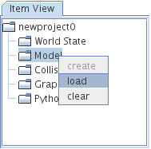
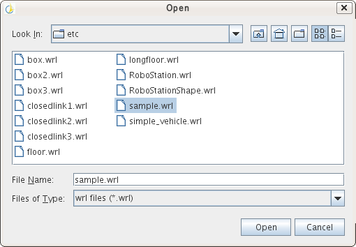
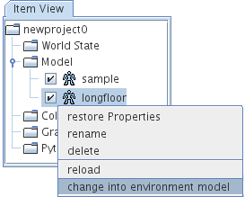
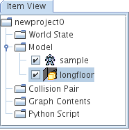
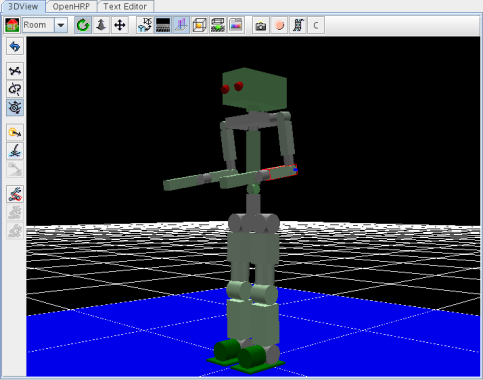
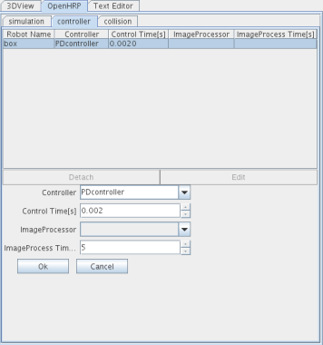
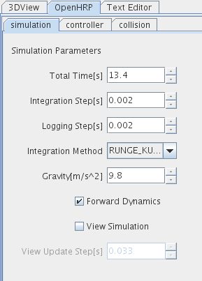
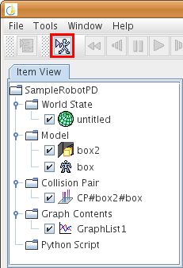
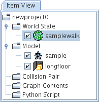
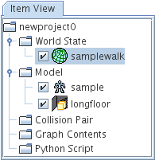

Introduction
In Install > Sample Simulation, we loaded its sample project(SampleRobotPD.xml) and checked operations of OpenHRP3.
To make OpenHRP3 available, you need to make a robot model and controller. In this procedure, we use the same names as SampleRobotPD.xml for our descriptions:
Launch GrxUI
You can launch GrxUI by this command:
Load of models you use and initial set upModels are loaded on ItemView as described in fig.2.

 Some View which deals with model items distingush robot models and environmental models, which are switched by the context menu of Item View as in fig.3.

 Loaded modeles are displayed on 3DView, and their position, attitude, and joint angle become editable. Content you have edited is set in a property of each model as its initial condition. You can see joint angles which you are editing in RobotStateView.

Here, you set it up to the initial position of the movement file which is loaded by PDcontroller. Please set up seeing the joint angle in the left upper figure. You also use PropertyView to enter values directly and edit joint angles. Set up of controllers
If you hava robot models, you can associate them with controllers on OpenHRP/Controller tab.
 Setup of the collision detection pairs
You can edit the collision detection pairs on OpenHRP/Collision tab.
Select models from comboxes Object1 and Object2, and specify links which collision detections are occured at Link1 and Link2.
In this example, we specify collision detections between robot model sample and environmental model longfloor. Setup of execution conditionOn OpenHRP/Simulation, you configure simulation time and so on.Configurated items are stored in WorldState item, so create WorldStateItem at first.
Sample controller reads the walking pattern file which has created on ahead, and drives a robot. Since the execution time of the pattern file is 13.4, specify the value as 13.4. Integration Step[s] Similarly, the time step of the pattern file is 0.002, specify 0.002 here. Loggin Step[s] Change to Logging Step will reduce file access by recording result, so simulation time can be cut down too. Here, we specigy 0.002[s] the same value as Integration Step. If the value of Loggin Step[s] is under one of Integration Step, the value of Integration Step will be used instead.

Save of projectStates of each item which has been set up by now, can be saved in a project file. Select File->Save Project from the menu to save.
Setup of Process ManagerIn the sample project SampleRobotPD.xml, descriptions are added to run OpenHRP3/bin/unix/PDController.sh automatically when its simulation is started.Currenty, this configuration cannot be set on GUI. Thus, after you save your project, please open the project file by a text editor, add the following line in it. <process id="PDcontroller" com="$(BIN_DIR)/PDController$(BIN_SFX)" dir="$(BIN_DIR)/" hasshutdown="true" autostart="false"/> Once the line is added, please reload the project for the change to be effected. Start of SimulationPlease press the button to start the simulation, which is enclosed in as red box.Model items and CollisionPair items which are selected on Item View at the point you press this button are effective during the simulation.
 In this case, if it is successful to connect the controller, the simulation starts to run. If it fail to connct, the dialog of the next figure will be displayed to choose one of options: 1. Wait a little more. 2. Start the simulation without a controller. 3. Cancel.
Stop and Quit of SimulationSimulation Start button changes to Stop/Quit button changes to Stop/Quit button
 during simulation.
during simulation.When Stop/Quit button is pressed, the simulation is stopped and the dialog which answers whether you want to quit appears. If you press OK button in this dialog, the simulation will quit. Use of playback functionSimulation results can be played back by using Play, Slow, Forward, Rewind buttons which exist on upper window , and so on.Simulation results are stored in a WorldState item, and the data at the time which is on the slider is displayed on several views such as 3DView, Graph, RobotStat. Graph functionItems which are display on graphs are stored in a GraphContents item.At first, create a GraphContents item on Item View.
You can select those items after simulations. Items which you have registered are displayed during playbacks or next simulations.
|


 
